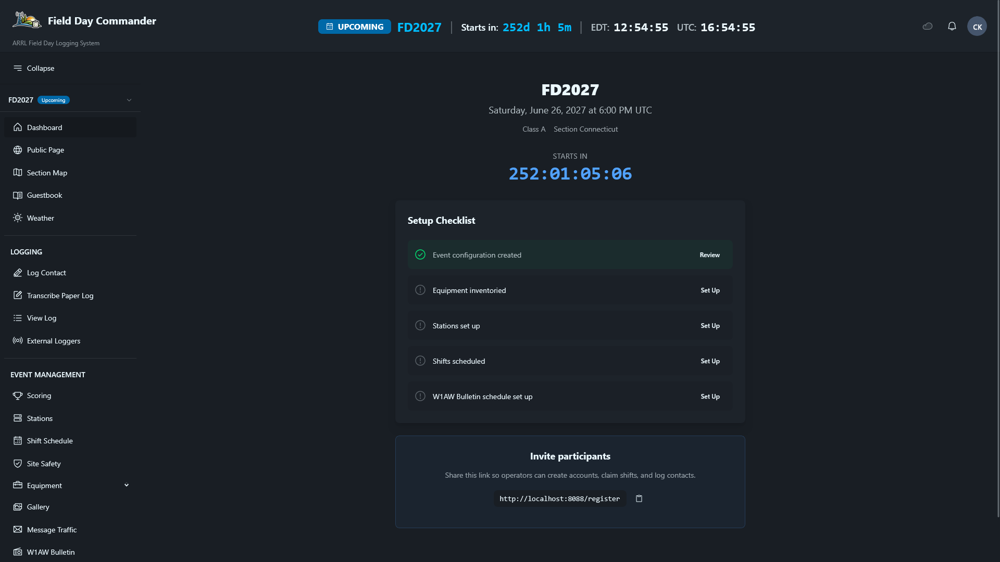
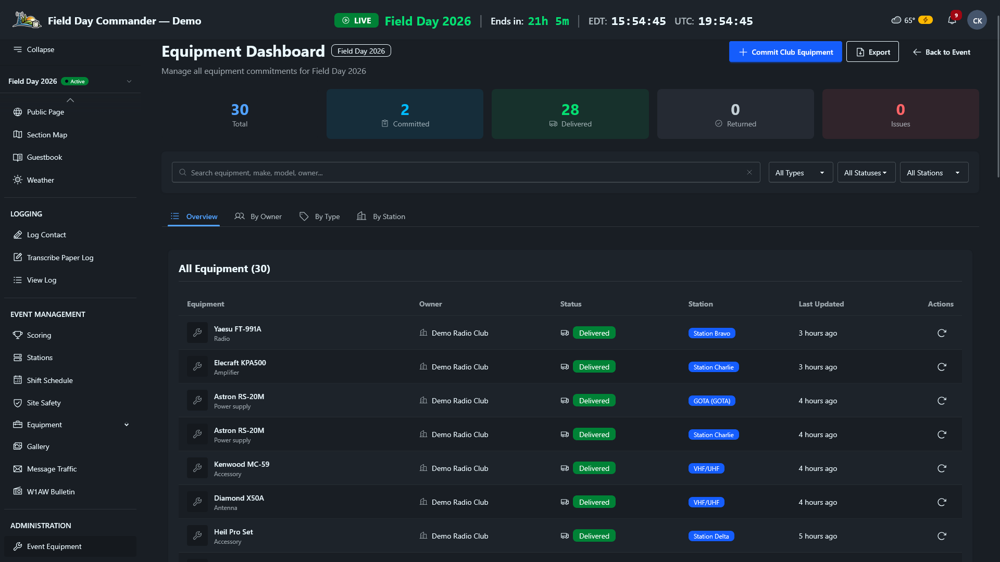
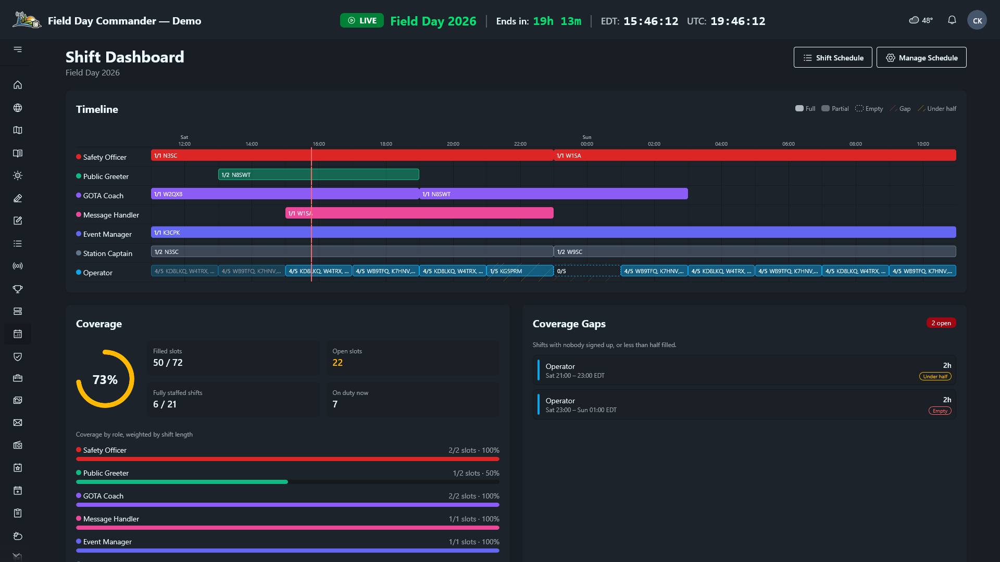
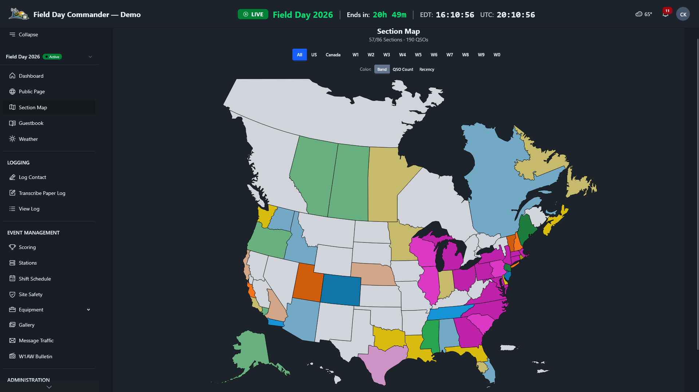
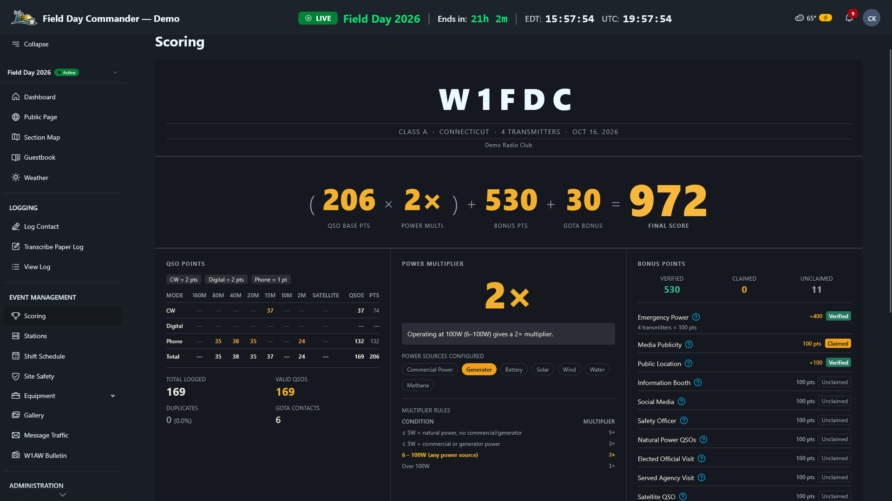
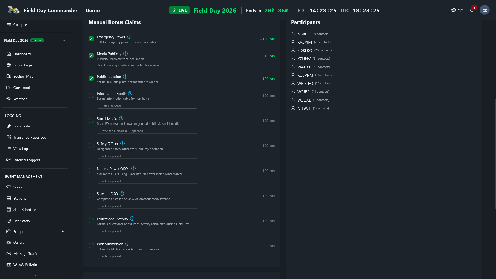

Plan the event
Bring stations, equipment, volunteers, and safety preparations into the same plan.
Station setup, readiness, and safety
Define your stations, assign equipment, build the volunteer schedule, and run through safety checklists, all in one place. Give your team a shared view of what is ready and what still needs attention.
- ✓ Station definitions with band and mode configuration
- ✓ Volunteer scheduling with shift blocks and gap detection
- ✓ Station readiness, so a station with a dead antenna can be marked down until it's fixed
- ✓ 15-item ARRL safety checklist with required/complete tracking
- ✓ Event readiness dashboard to see what's done and what's left at a glance


Equipment inventory and commitments
Every operator has a personal "My Catalog" for their own gear. Commit equipment to upcoming events, assign gear to stations, and track availability across the whole operation.
- ✓ Personal catalogs with photo, make/model, serial number, and tags
- ✓ Event Commitments to pledge your gear ahead of time
- ✓ Searchable and filterable by type, status, and owner
- ✓ Assign gear to specific stations before the event


Volunteer shifts and coverage gaps
Build the full 24-hour schedule before the event starts. Operators can sign themselves up for open slots, and the shift dashboard shows managers a timeline of every role, overall coverage, and the upcoming shifts nobody has filled yet.
- ✓ Operators self-sign-up for open time slots
- ✓ Fill-status indicators show gaps before they become problems
- ✓ Schedule any role: operators, safety officers, public information table
- ✓ "My Shifts" view so every volunteer knows when they're up
- ✓ Shift dashboard with coverage by role and a list of empty or under-half-staffed shifts
- ✓ Mark everyone on an ended shift as worked in one click, for accurate volunteer hours


Operate together
Use the built-in logger or bring contacts in from the software your operators know.
Real-time logging across every station
Multiple operators on multiple devices entering contacts at the same time. Field Day Commander merges everything into a single, unified log in real time. Operators can follow contacts from across the event without combining separate station logs afterward.
- ✓ Dupes (same call, band, and mode) flagged instantly across every station
- ✓ Section and exchange validation catches typos before they're saved
- ✓ One station per band and mode, enforced when a session starts, plus a warning if someone works one of your own operators
- ✓ Cabrillo export for ARRL Field Day or Winter Field Day, plus an ADIF log you can load into the club's logging software
- ✓ Single-field entry flow designed for speed: type the exchange, hit Enter, done

Shared station computers and operator handoffs
Stations can run on club computers, members' own laptops, or a mix. When a computer stays at a station and operators take turns on it, use station mode. A station captain binds the computer to its station once, and after that operators sit down, type their callsign, and start logging. Nobody needs a password.
- ✓ Sign in with a callsign only, no password
- ✓ The browser is bound to one station, and permissions are capped at logging and viewing, even for an admin's callsign
- ✓ New callsigns get a placeholder account an admin can turn into a real login later
- ✓ After 15 idle minutes, the station asks if anyone is still there, then ends the session
- ✓ At a GOTA station, the coach signs in and enters each GOTA operator on the logging screen
- ✓ Captains can mark any station unavailable (antenna down, finals blown), which ends its session and blocks new ones until it's ready
Bring contacts in from the software you already run
Already running WSJT-X for FT8, N1MM Logger+ for CW, or fldigi for RTTY? Field Day Commander receives contacts directly from those programs over UDP, so operators don't have to double-log. You can also import an ADIF file after the fact with a guided wizard that parses the file, maps stations, validates records, and lets you review everything before it hits your log.
- ✓ N1MM Logger+ UDP broadcast listener with live packet and error stats
- ✓ WSJT-X / JTDX UDP ADIF listener for FT8, FT4, and other digital modes
- ✓ Generic ADIF UDP endpoint for fldigi and any program that can send ADIF over UDP
- ✓ ADIF file import wizard: upload, parse, map fields to stations, review, and import
- ✓ Validation catches records outside the event window, flags dupes, and lets you skip or fix before importing
- ✓ Configurable UDP ports with firewall instructions for each listener
- ✓ Sub-modes like FT8 or SSTV recorded on every contact, whichever way it came in
Built for real field conditions
Two layers of resilience. First: the entire platform runs on your LAN and doesn't need the internet. Second: if a browser temporarily loses its connection to the server, contacts will queue locally and sync when it reconnects. Optional live weather data and email need their respective connections and services.
- ✓ Runs on your LAN with no cloud services
- ✓ If a device loses connection, operators keep logging without interruption
- ✓ Queued contacts shown with a clear status indicator
- ✓ Queued contacts sync automatically when the connection comes back
- ✓ Paper log transcription with correct timestamps if you need to go fully manual
- ✓ Backup and restore scripts with hourly and nightly schedules How to set them up
Follow the progress
Keep the whole team informed, from contacts and traffic to the live score.
A shared view of the club’s progress
Put the dashboard on a large screen so operators, volunteers, and visitors can follow the event as contacts come in.
- ✓ Follow the live score and QSO rate
- ✓ See sections worked and band activity
- ✓ Keep time remaining in view

See where your contacts are coming from
The Section Map gives your whole club a live, visual picture of how the event is going. Every ARRL and RAC section lights up as contacts come in. Filter by call area or switch between color modes to see band distribution, QSO density, or how recently each section was worked. Put it on a big screen at the site and let everyone see which sections you still need.
- ✓ Interactive map of every ARRL/RAC section across the US and Canada (Yukon gets its own shape for Winter Field Day)
- ✓ Filter by region: All, US, Canada, or individual call areas (W1 through W0)
- ✓ Three color modes: Band (which band worked each section), QSO Count (heat map), and Recency (how fresh the contact is)
- ✓ Color intensity shows depth: pastel for 1 band, vivid for 2, deep for 3+
- ✓ Hover any section to see QSO count, bands, modes, and time since last contact
- ✓ Updates in real time as contacts are logged


NTS messages and bulletin records
Keep message traffic and supporting records alongside the event log, so the team can follow progress and review bonus claims.
- ✓ Record and follow NTS radiograms
- ✓ Track the Section Manager or Section Emergency Coordinator message separately
- ✓ Save your over-the-air W1AW bulletin copy for submission records

Live scoring and bonus claims
Power multipliers, bonus points, and band breakdowns are all calculated as contacts come in. For Winter Field Day, the same page tracks objectives and their multipliers instead. Put the dashboard on a big screen so the whole club can see where things stand.
- ✓ Power multiplier auto-calculated from your configured power sources
- ✓ All 18 ARRL bonus categories tracked (claimed, verified, or unclaimed)
- ✓ Bulletin page (W1AW or WFD) with the transmission schedule and reminders you set in your profile
- ✓ QSO points weighted by mode: CW/Digital = 2 pts, Phone = 1 pt
- ✓ Everyone sees the same live score, on every screen


A guestbook for everyone who stops by
Field Day is a public event. When visitors come to check out your operation, they can sign the digital guestbook right from any device on the network. Elected official and agency visits count toward ARRL bonus points, and the rest builds a record of community engagement.
- ✓ Visitors sign in with name and optional callsign
- ✓ Elected official and agency visits tracked for their bonus points
- ✓ Visitors can sign themselves in, no account or password needed
- ✓ Exportable log of all visitors for club records
Winter Field Day, scored the WFDA way
Pick Winter Field Day as the event type and the app switches rulebooks. The power multiplier and GOTA go away, bonuses become objectives, and the score becomes QSO points × (OM + 1). Band, mode, and QRP objectives fill in from your log on their own, and the bulletin objective is earned when you save your copy. The rest you claim from the event page once you've done them.
- ✓ Picks the right Winter Field Day scoring rules for the event
- ✓ Every objective and its multiplier tracked, with completion shown as a percentage
- ✓ H, I, O, and M categories, plus MX and DX sections in the exchange
- ✓ 2027 no-credit rules for WSJT modes and satellites (contacts are still logged, just marked)
- ✓ Cabrillo log, ADIF file, and an Event Summary PDF laid out like the WFDA form
Finish and submit
Review the entry and keep a record of the weekend’s work.
Prepare the entry from your shared log
Review the score and bonus claims together, then download the records your club needs to prepare its entry.
- ✓ Export Cabrillo for the event entry
- ✓ Export ADIF for the club log or CSV for analysis
- ✓ Download submission summaries, including the Winter Field Day Event Summary PDF
- ✓ Keep event photos and supporting records for the club’s review


Capture the event in photos
Upload photos as the event unfolds: antenna raises, station setups, the team working pileups at 2 AM. Everything is stored on the local server, and operators can contribute from any device on the network.
- ✓ Upload photos from any connected device
- ✓ Everything stays on your network. No cloud accounts or uploads to third parties
- ✓ Browse the gallery to see the full event timeline
- ✓ Great for club newsletters, social media, and ARRL submissions